Hari ini kamu bakal bisa...
- Menjelaskan konsep integrasi konten antarperangkat lunak dengan bahasa sendiri.
- Mengidentifikasi jenis konten (teks, data, gambar) dan perangkat lunak yang tepat untuk mengolah masing-masing.
- Membedakan cara memindahkan konten (salin-tempel dengan beragam opsi tempel, sisipkan, dan tempel tautan) melalui percobaan.
- Menyusun langkah integrasi menjadi laporan satu halaman yang rapi, lengkap dengan keterangan dan sumber gambar.
- Mendeskripsikan manfaat integrasi konten serta masalah umum dan etikanya.
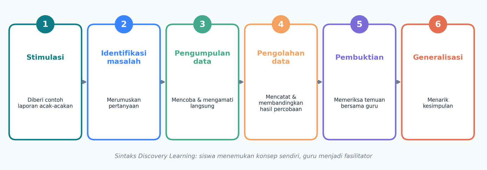
Kisah Aksi Bersih Pantai
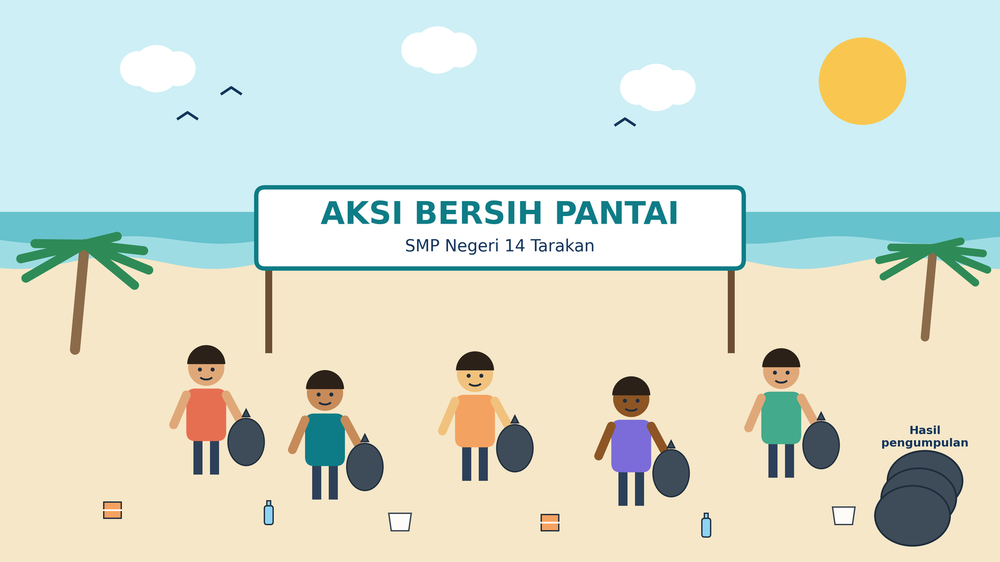
OSIS bersama kelas IX mengadakan Aksi Bersih Pantai. Ada tiga seksi: Seksi Teks menulis narasi kegiatan, Seksi Data mencatat berat sampah, dan Seksi Dokumentasi mengumpulkan foto. Mereka bekerja di aplikasi yang berbeda-beda. Ketua OSIS minta: "Gabungkan jadi SATU laporan yang utuh dan rapi!"
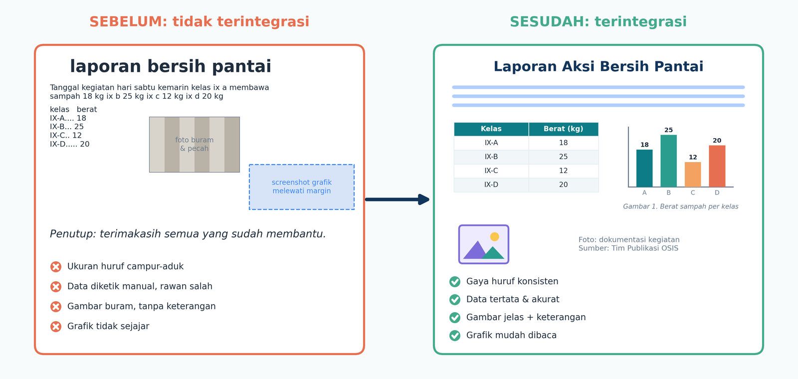
Tiga Pertanyaan Kunci
Aplikasi apa yang tepat untuk teks, data, dan gambar?
Bagaimana cara memindahkan konten antar aplikasi, dan apa bedanya?
Masalah apa yang mungkin muncul, dan bagaimana mencegahnya?
Konsep Dasar
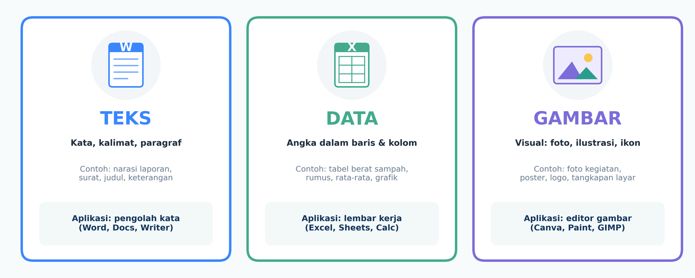
Gunting atau pisau?
Buka bungkus keripik lebih gampang pakai gunting daripada pisau dapur, kan? Aplikasi juga begitu: pilih yang sesuai bahan-nya (Buku Siswa hlm. 164).
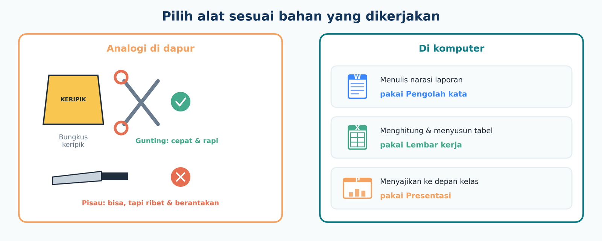
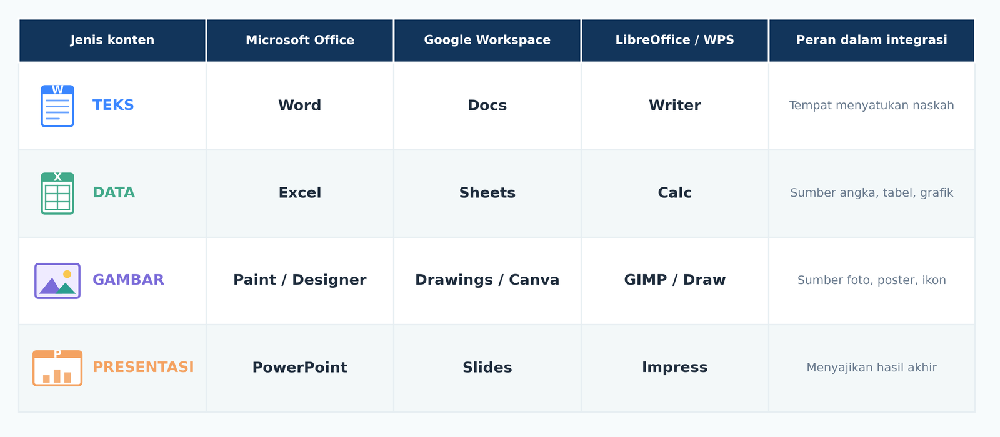
Mini-game 1: Jodohkan konten dengan aplikasinya
Alur Kerja 6 Langkah
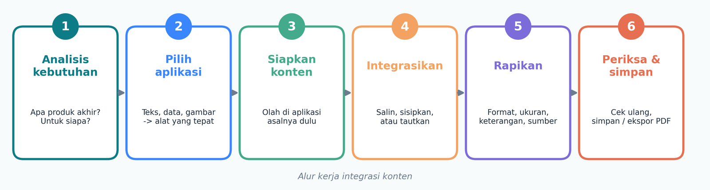
Mini-game 2: Urutkan 6 langkahnya
Gunakan tombol naik/turun supaya urutannya benar.
Lab Eksperimen
| Kelas | Botol | Kantong | Kemasan | Lainnya | Total |
|---|---|---|---|---|---|
| IX-A | 8 | 5 | 3 | 2 | 18 |
| IX-B | 10 | 8 | 5 | 2 | 25 |
| IX-C | 5 | 3 | 3 | 1 | 12 |
| IX-D | 7 | 6 | 4 | 3 | 20 |
| Total | 30 | 22 | 15 | 8 | 75 |
Eksperimen 1: Tabel Excel ke Word
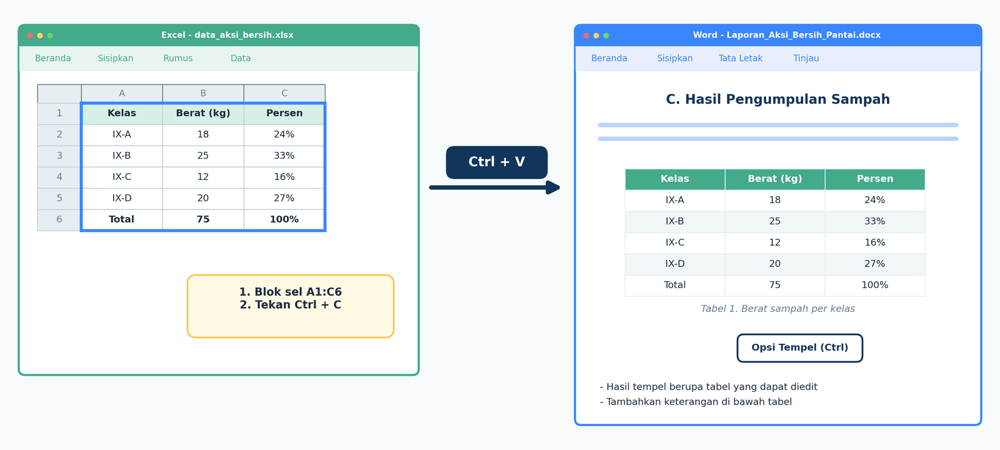
Simulator Opsi Tempel
Klik satu opsi untuk melihat hasilnya.
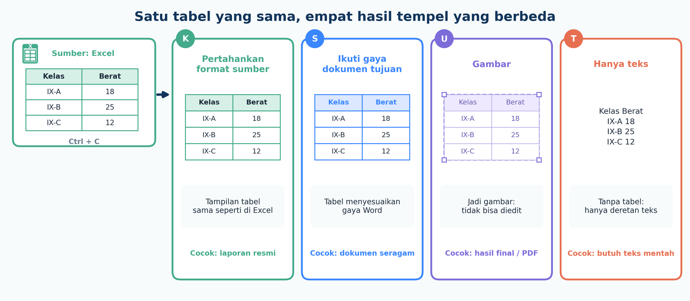
Eksperimen 2: Grafik, gambar atau tautan?
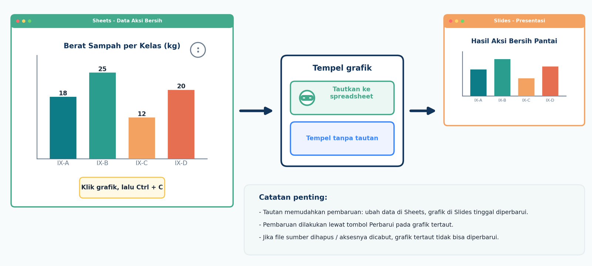
Simulator Data Berubah
Data IX-C awalnya 12 kg. Ubah jadi 22 kg, lalu lihat grafik mana yang ikut berubah.
Tekan tombol ubah data untuk memulai.
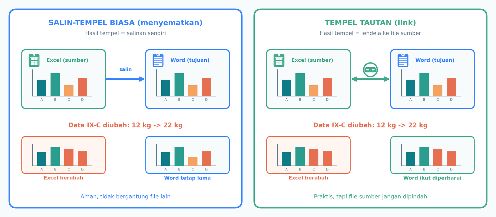
Eksperimen 3: Menyisipkan gambar
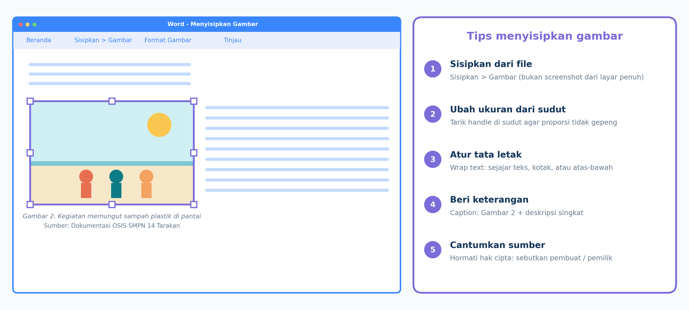
Simulator Ubah Ukuran Gambar
Geser untuk melebarkan saja (seperti menarik dari sisi tengah) lalu bandingkan dengan menarik dari sudut.
Tarik dari sudut supaya gambar tidak gepeng.
Etika: Cantumkan Sumber
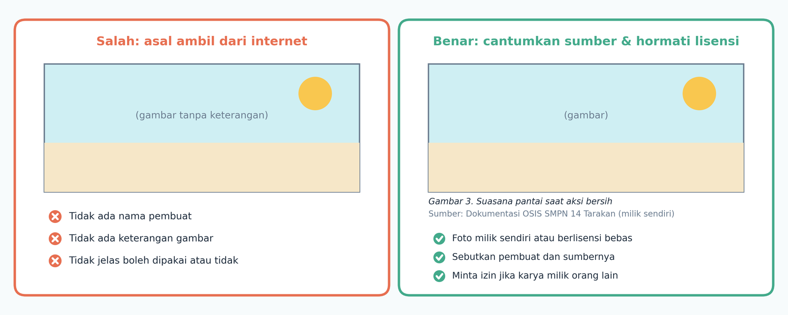
Masalah yang Sering Muncul
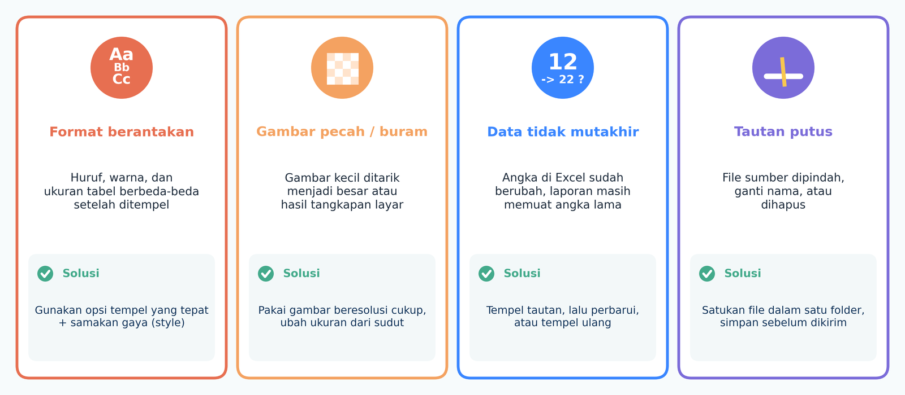
Huruf, warna, dan lebar tabel berbeda setelah ditempel.
Solusi: Pilih opsi tempel yang tepat (Use Destination Styles), lalu samakan gaya paragraf.
Gambar beresolusi kecil diperbesar, atau memakai tangkapan layar yang kecil.
Solusi: Pakai gambar beresolusi cukup; ubah ukuran dari sudut agar proporsi terjaga.
Grafik hasil tempel gambar tidak ikut berubah ketika data sumber berubah.
Solusi: Gunakan tempel tautan lalu perbarui, atau tempel ulang grafik terbaru.
File sumber dipindah, diganti namanya, atau dihapus.
Solusi: Simpan semua file dalam satu folder; ubah menjadi gambar/PDF sebelum dikirim.
Banyak gambar beresolusi sangat besar.
Solusi: Kompres gambar; ekspor ke PDF; gunakan ukuran gambar secukupnya.
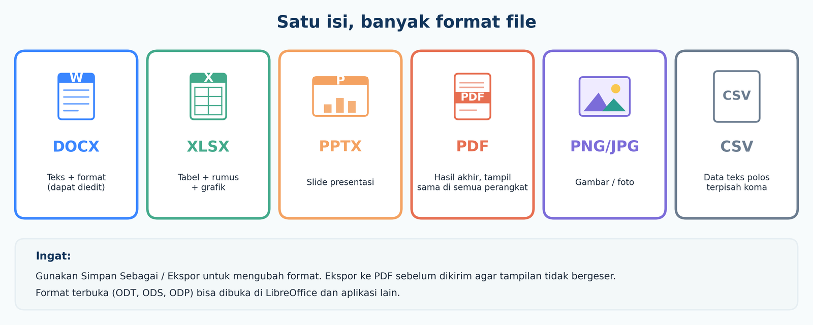
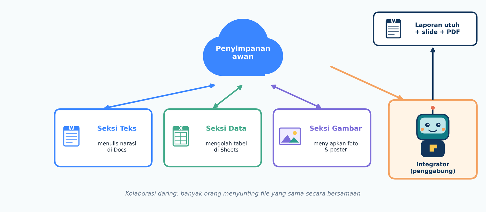
Laporan Satu Halaman
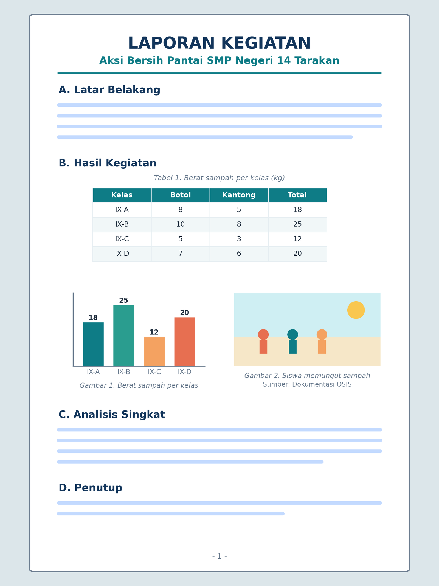
Checklist laporanmu
Rangkuman
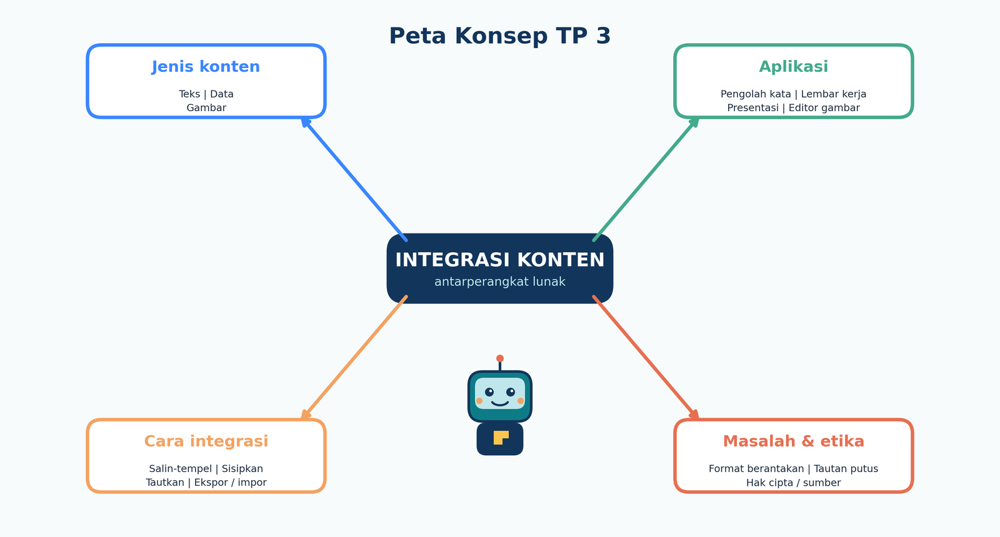
- Integrasi konten = menyatukan teks, data, dan gambar dari berbagai aplikasi menjadi satu produk yang utuh.
- Pilih aplikasi sesuai jenis konten: pengolah kata untuk teks, lembar kerja untuk data, editor gambar untuk visual, presentasi untuk menyajikan.
- Cara memindahkan: salin-tempel (pilih opsi tempel), sisipkan, atau tempel tautan agar bisa diperbarui.
- Rapikan dan beri keterangan: judul tabel, caption gambar, serta sumber. Hormati hak cipta.
- Periksa ulang lalu simpan atau ekspor (PDF) agar tampilan tidak bergeser.